Taxiway Model Overview
The taxiway model has three main agents:
Helicopter, which lands and takes off from a helipad
Aircraft, which lands at a runway, taxis to a gate, and takes off from a runway (and may be UAVs or Piloted Aircraft)
ATC, which coordinates operations
These agents interact via the flows:
Ground, a MultiFlow tracking the map as well as agent assignments/allocations
Location, a MultiFlow tracking the position/velocity of each route on the map, and
Requests, a CommsFlow tracking the messages sent between the ATC and the Aircraft/Helicopters
Copyright © 2024, United States Government, as represented by the Administrator of the National Aeronautics and Space Administration. All rights reserved.
The “"Fault Model Design tools - fmdtools version 2"” software is licensed under the Apache License, Version 2.0 (the "License"); you may not use this file except in compliance with the License. You may obtain a copy of the License at http://www.apache.org/licenses/LICENSE-2.0.
Unless required by applicable law or agreed to in writing, software distributed under the License is distributed on an "AS IS" BASIS, WITHOUT WARRANTIES OR CONDITIONS OF ANY KIND, either express or implied. See the License for the specific language governing permissions and limitations under the License.
from model import taxiway_model, create_fault_scen_metrics
from fmdtools.sim import propagate as prop
import networkx as nx
from common import plot_tstep, plot_course
import pandas as pd
from fmdtools.define.architecture.function import FunctionArchitectureTypeGraph
mdl = taxiway_model()
tg = FunctionArchitectureTypeGraph(mdl)
tg.set_edge_labels(title='')
fig, ax = tg.draw(figsize=(7,5), withlegend=True, legend_bbox=(0, .2))
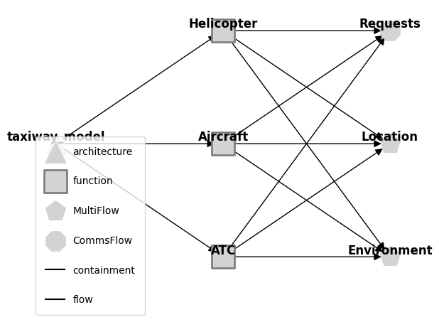
fig.savefig("modelstructure.eps", format="eps", bbox_inches = 'tight', pad_inches = 0)
The PostScript backend does not support transparency; partially transparent artists will be rendered opaque.
mdl.flows['location']
location Location
- s=LocationState(x=30.0, y=25.0, xd=0.0, yd=0.0, speed=0.0, stage='flight', mode='standby')
LOCALS:
- ma1=(s=(x=10.0, y=20.0, xd=0.0, yd=0.0, speed=0.0, stage='takeoff', mode='standby'))
- ma2=(s=(x=30.0, y=25.0, xd=0.0, yd=0.0, speed=0.0, stage='flight', mode='standby'))
- ma3=(s=(x=30.0, y=25.0, xd=0.0, yd=0.0, speed=0.0, stage='flight', mode='standby'))
- ua1=(s=(x=45.0, y=-5.0, xd=0.0, yd=0.0, speed=0.0, stage='park', mode='standby'))
- ua2=(s=(x=30.0, y=25.0, xd=0.0, yd=0.0, speed=0.0, stage='flight', mode='standby'))
- ua3=(s=(x=30.0, y=25.0, xd=0.0, yd=0.0, speed=0.0, stage='flight', mode='standby'))
- h1=(s=(x=65.0, y=15.0, xd=0.0, yd=0.0, speed=0.0, stage='land', mode='standby'))
- h2=(s=(x=30.0, y=25.0, xd=0.0, yd=0.0, speed=0.0, stage='flight', mode='standby'))
mdl.flows['requests']
requests Requests
- s=RequestState(atc_com='None', asset_req='None', route=' ')
COMMS:
- atc=(s=(atc_com='None', asset_req='land', route=' '))
- ma1=(s=(atc_com='None', asset_req='takeoff', route=' '))
- ma2=(s=(atc_com='None', asset_req='land', route=' '))
- ma3=(s=(atc_com='None', asset_req='land', route=' '))
- ua1=(s=(atc_com='None', asset_req='taxi', route=' '))
- ua2=(s=(atc_com='None', asset_req='land', route=' '))
- ua3=(s=(atc_com='None', asset_req='land', route=' '))
- h1=(s=(atc_com='None', asset_req='taxi', route=' '))
- h2=(s=(atc_com='None', asset_req='land', route=' '))
mdl.flows['ground']
ground Environment
- s=TaxiwayStates(area_allocation={'takeoff1': {'ma1'}, 'landing1': set(), 'helipad1': {'h1'}, 'gate1': set(), 'gate2...
LOCALS:
- atc=(s=(area_allocation={'takeoff1': {'ma1'}, 'landing1': set(), 'helipad1': {'h1'}, 'gate1': set(), 'gate2': set()...
Model Simulation
fig, ax = mdl.flows['ground'].show_map()
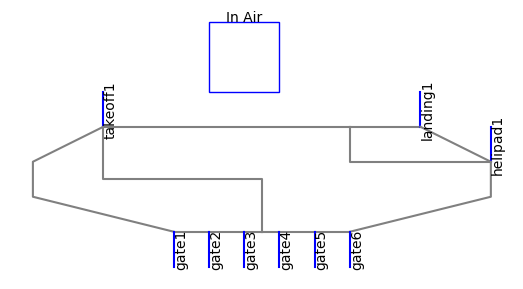
endresults, mdlhist = prop.nominal(mdl)
fig, ax=plot_tstep(mdl, mdlhist, 16, show_area_allocation=False, locattr="stage", title="Taxiway Activity ")
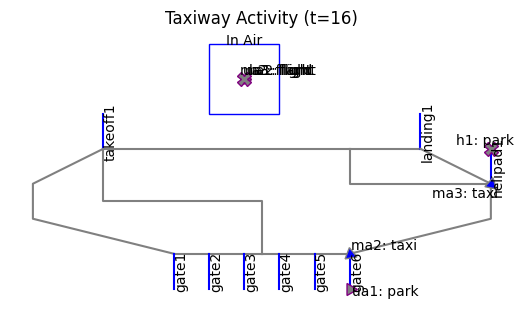
fig.savefig("modelactivity.eps", format="eps", bbox_inches = 'tight', pad_inches = 0)
fig, ax = plot_course(mdl, mdlhist, "ma2", title="One aircraft's route over time")
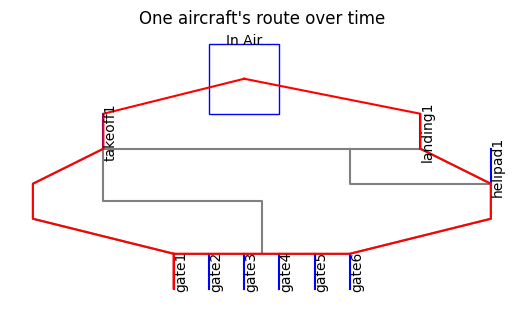
fig.savefig("assetroute.eps", format="eps", bbox_inches = 'tight', pad_inches = 0)
from fmdtools.analyze import phases
phasemaps = phases.from_hist(mdlhist)
phases_to_plot ={"ma2": phasemaps["ma2"], 'h2': phasemaps['h2']}
fig = phases.phaseplot(phases_to_plot, figsize=(4,4), title_padding=-0.02, title="Asset Operational Phases", phase_ticks="both")
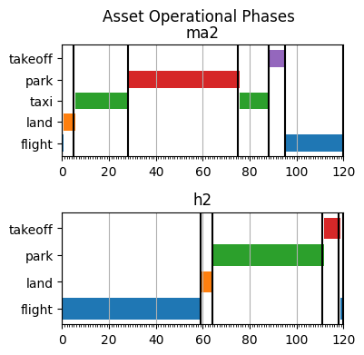
fig.savefig("assetmodes.eps", format="eps", bbox_inches = 'tight', pad_inches = 0)
Fault Simulation and Analysis
Perception Fault - AC Vision Fault
endresults, mdlhist = prop.one_fault(mdl, "ma3", "lost_sight",
to_return={93: {"graph.flows.location":{'include_glob':False, 'with_methods': False}},
110:{"graph.flows.location":{'include_glob':False, 'with_methods': False}},
20:["graph"], 120:['graph', "classify"]})
fig, ax = plot_tstep(mdl, mdlhist.faulty, 93, locattr="stage", assets_to_label=["ma3", "ma2"], areas_to_label=[],
title="MA3 approaches MA2 with no vision cone ", show_area_allocation=False)
0 [-0.05800303 0.22416597]
1 [0.91439978 0.69772787]
fig.savefig("ac_vision_map.eps", format="eps", bbox_inches = 'tight', pad_inches = 0)
endresults.faulty.t120p0.classify #table should also include local, global metrics
num_cycled: 4
perc_cycled: 0.5
num_crashed: 2
endresults
nominal.t20p0.graph: <fmdtools.define.architecture.function.FunctionArchitectureGraph object at 0x0000026482B1E410>
nominal.t93p0.graph.flows.location: <fmdtools.define.flow.multiflow.MultiFlowGraph object at 0x0000026482B7D490>
nominal.t110p0.graph.flows.location: <fmdtools.define.flow.multiflow.MultiFlowGraph object at 0x0000026482BC2E50>
nominal.t120p0.classify.num_cycled: 8
nominal.t120p0.classify.perc_cycled: 1.0
nominal.t120p0.classify.num_crashed: 0
nominal.t120p0.graph: <fmdtools.define.architecture.function.FunctionArchitectureGraph object at 0x0000026482691650>
ma3_lost_sight_t0.t20p0.graph: <fmdtools.define.architecture.function.FunctionArchitectureGraph object at 0x0000026482B929D0>
ma3_lost_sight_t0.t9<fmdtools.define.flow.multiflow.MultiFlowGraph object at 0x0000026482BD2E50>
ma3_lost_sight_t0.t1<fmdtools.define.flow.multiflow.MultiFlowGraph object at 0x0000026482B8EC10>
ma3_lost_sight_t0.t1 4
ma3_lost_sight_t0.t1 0.5
ma3_lost_sight_t0.t1 2
ma3_lost_sight_t0.t120p0.graph: <fmdtools.define.architecture.function.FunctionArchitectureGraph object at 0x0000026482BCA410>
endresults.faulty.t93p0.graph.flows.location
endresults.faulty.t93p0.graph.flows.location.set_edge_labels(title="")
#%matplotlib qt
#endresults.t93p0.graph.flows.location.move_nodes()
%matplotlib inline
pos = {'ma1': [-0.51, -0.08], 'ma1_percieved': [-0.88, 0.03],
'ma1_closest': [-0.3, 0.12], 'ma2': [-0.66, 0.59],
'ma2_percieved': [-0.81, 0.84], 'ma2_closest': [-0.67, 0.26],
'ma3': [0.77, 0.49], 'ma3_percieved': [0.81, 0.83],
'ma3_closest': [0.51, 0.28], 'ua1': [0.0, 0.62],
'ua1_percieved': [0.0, 0.91], 'ua1_closest': [-0.02, 0.34],
'ua2': [0.02, -0.64], 'ua2_percieved': [0.0, -0.88],
'ua2_closest': [0.04, -0.38], 'ua3': [0.66, -0.48],
'ua3_percieved': [0.8, -0.84], 'ua3_closest': [0.42, -0.23],
'h1': [0.64, 0.11], 'h1_percieved': [0.93, -0.15],
'h1_closest': [0.3, 0.07], 'h2': [-0.69, -0.52],
'h2_percieved': [-0.79, -0.85], 'h2_closest': [-0.45, -0.32]}
endresults.faulty.t93p0.graph.flows.location.set_pos(**pos)
endresults.faulty.t93p0.graph.flows.location.set_node_labels(title="shortname")
fig, ax = endresults.faulty.t93p0.graph.flows.location.draw(figsize=(8,8), title="t=93", legend_bbox=(0.84,0.27))
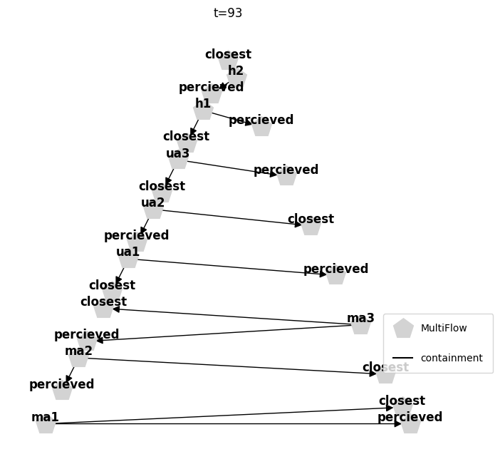
fig.savefig("ac_loc_93.eps", format="eps", bbox_inches = 'tight', pad_inches = 0)
The PostScript backend does not support transparency; partially transparent artists will be rendered opaque.
#%matplotlib qt
#endresults.t120p0.graph.move_nodes()
%matplotlib inline
pos = {'atc': [-1.0, -0.15], 'ma1': [-0.86, 0.52], 'ma2': [-0.33, 0.95],
'ma3': [0.62, -0.78], 'ua1': [-0.66, -0.76], 'ua2': [0.36, 0.94],
'ua3': [-0.02, -1.0], 'h1': [0.89, 0.48], 'h2': [1.0, -0.2],
'ground': [0.31, -0.26], 'location': [-0.31, -0.24], 'requests': [-0.01, 0.43]}
endresults.faulty.t120p0.graph.set_pos(**pos)
endresults.faulty.t120p0.graph.set_edge_labels(title="")
endresults.faulty.t120p0.graph.set_node_styles(nodetype=dict(FxnBlock=dict(nx_node_size=2000),
MultiFlow=dict(nx_node_size=2000),
CommsFlow=dict(nx_node_size=2000)),
degraded={}, faulty={})
fig, ax = endresults.faulty.t120p0.graph.draw(figsize=(5,5), withlegend=False)
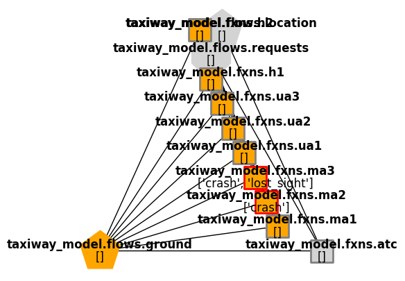
fig.savefig("ac_faultprop_120.eps", format="eps", bbox_inches = 'tight', pad_inches = 0)
ind_hist = create_fault_scen_metrics(mdlhist)
fig, ax = ind_hist.plot_line("degraded_fields",
"cycled_assets",
"unsafe_distances",
"assets_without_sight",
"faulty_functions",
time_slice=[0,93],
time_slice_label = "fault injection/occurence",
ylabels={'off-nominal fields':'%'})
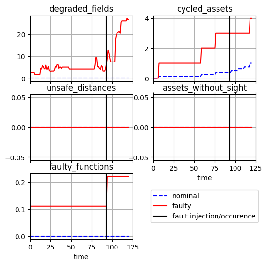
fig.savefig("fault_history_ac_vision.eps", format="eps", bbox_inches = 'tight', pad_inches = 0)
The PostScript backend does not support transparency; partially transparent artists will be rendered opaque.
final_values = ind_hist.scenario.get_slice(-1)
# final_values
final_res = pd.DataFrame.from_dict({k: [v] for k, v in final_values.items()}, orient='index')
final_res
| 0 | |
|---|---|
| incorrect_fields | 0.000000 |
| assets_without_sight | 0.000000 |
| unsafe_distances | 0.000000 |
| overbooked_locations | 0.000000 |
| incorrect_perception | 0.000000 |
| duplicate_land_commands | 0.000000 |
| cycled_assets | 4.000000 |
| degraded_fields | 26.627219 |
| faulty_functions | 0.222222 |
| time | 120.000000 |
print(final_res.to_latex())
\begin{tabular}{lr}
\toprule
& 0 \\
\midrule
incorrect_fields & 0.000000 \\
assets_without_sight & 0.000000 \\
unsafe_distances & 0.000000 \\
overbooked_locations & 0.000000 \\
incorrect_perception & 0.000000 \\
duplicate_land_commands & 0.000000 \\
cycled_assets & 4.000000 \\
degraded_fields & 26.627219 \\
faulty_functions & 0.222222 \\
time & 120.000000 \\
\bottomrule
\end{tabular}
Communications Fault - Poor land command by ATC
from fmdtools.define.flow.multiflow import MultiFlowGraph
from fmdtools.define.flow.commsflow import CommsFlowGraph
ground_args = {'with_root':True, "role_nodes": ['container', 'local']}
# todo: re-add send connections
# 'send_connections':{"asset_area":"asset_area", "area_allocation":"area_allocation", "asset_assignment":"asset_assignment"}
req_args = {'include_glob': False, "ports_only": True, 'with_methods': False}
endresults, mdlhist = prop.sequence(mdl, faultseq={8:{"atc":["wrong_land_command"]},10:{"ua2":["lost_sight"]}},
to_return={10:{"graph.flows.requests":(CommsFlowGraph, req_args)},
11:{"graph.flows.requests":(CommsFlowGraph, req_args),
"graph.flows.ground":(MultiFlowGraph, ground_args)},
19:{"graph.flows.requests":{'include_glob':False, "ports_only":True}},
20:["graph"], 120:"classify"})
fig, ax = plot_tstep(mdl, mdlhist.faulty, 19, title="Aircraft crashed", areas_to_label=[])
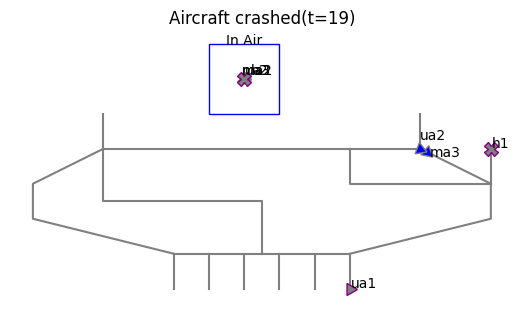
fig.savefig("atc_comms_map.eps", format="eps", bbox_inches = 'tight', pad_inches = 0)
endresults.faulty.t120p0.classify
num_cycled: 4
perc_cycled: 0.5
num_crashed: 2
endresults.faulty.t11p0.graph.flows.ground
<fmdtools.define.flow.multiflow.MultiFlowGraph at 0x2648299a2d0>
import networkx as nx
pos = nx.spring_layout(nx.MultiGraph(endresults.faulty.t11p0.graph.flows.ground.g))
endresults.faulty.t11p0.graph.flows.ground.set_pos(**pos)
endresults.faulty.t11p0.graph.flows.ground.set_node_labels(title="last", subtext="indicators")
endresults.faulty.t11p0.graph.flows.ground.set_edge_labels(title="")
endresults.faulty.t11p0.graph.flows.ground.set_node_styles(nodetype={'State':dict(nx_node_size=800),
'MultiFlow':dict(nx_node_size=800)},
degraded={}, faulty={})
fig, ax = endresults.faulty.t11p0.graph.flows.ground.draw(figsize=(7,7), legend_labelspacing=3, legend_bbox=(0.79,0.6))
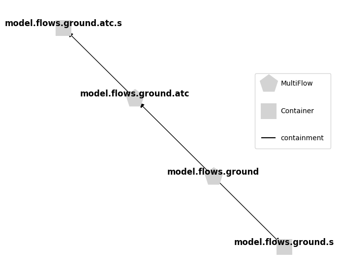
fig.savefig("atc_comms_ground_11.eps", format="eps", bbox_inches = 'tight', pad_inches = 0)
The PostScript backend does not support transparency; partially transparent artists will be rendered opaque.
pos = nx.spring_layout(nx.MultiGraph(endresults.faulty.t10p0.graph.flows.requests.g), iterations=500)
endresults.faulty.t10p0.graph.flows.requests.set_pos(**pos)
endresults.faulty.t10p0.graph.flows.requests.set_edge_labels(title="")
endresults.faulty.t10p0.graph.flows.requests.set_node_labels(title="shortname")
endresults.faulty.t10p0.graph.flows.requests.set_node_styles(nodetype={'CommsFlow':dict(nx_node_size=900)},
degraded={}, faulty={})
fig, ax = endresults.faulty.t10p0.graph.flows.requests.draw(figsize=(10,10), legend_bbox=(0.7,0.9))
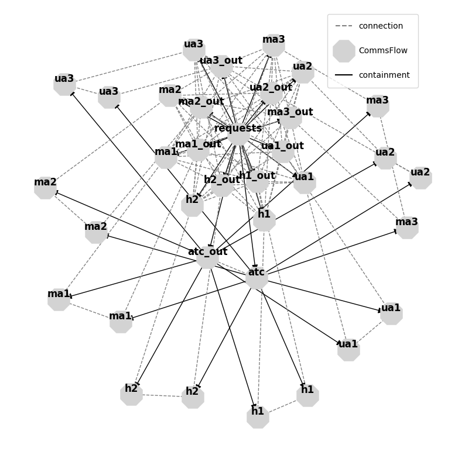
fig.savefig("atc_comms_requests_10.eps", format="eps", bbox_inches = 'tight', pad_inches = 0)
The PostScript backend does not support transparency; partially transparent artists will be rendered opaque.
pos = {'atc': [-1.0, -0.22], 'ma1': [-0.86, 0.52], 'ma2': [-0.33, 0.95],
'ma3': [0.62, -0.78], 'ua1': [-0.66, -0.76], 'ua2': [0.36, 0.94],
'ua3': [-0.02, -1.0], 'h1': [0.89, 0.48], 'h2': [1.0, -0.2],
'ground': [0.31, -0.26], 'location': [-0.31, -0.24], 'requests': [-0.01, 0.43]}
endresults.faulty.t20p0.graph.set_pos(**pos)
endresults.faulty.t20p0.graph.set_edge_labels(title="")
endresults.faulty.t20p0.graph.set_node_labels(title="shortname")
endresults.faulty.t20p0.graph.set_node_styles(nodetype=dict(FxnBlock=dict(nx_node_size=2000),
MultiFlow=dict(nx_node_size=2000),
CommsFlow=dict(nx_node_size=2000)),
degraded={}, faulty={})
fig, ax = endresults.faulty.t20p0.graph.draw(withlegend=False, figsize=(5,5))
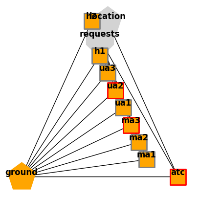
fig.savefig("atc_comms_resgraph.eps", format="eps", bbox_inches = 'tight', pad_inches = 0)
ind_hist = create_fault_scen_metrics(mdlhist)
fig, ax = ind_hist.plot_line("degraded_fields",
"cycled_assets",
"unsafe_distances",
"assets_without_sight",
"faulty_functions",
time_slice=[8, 10],
time_slice_label = "fault injection/occurence",
ylabels={'off-nominal fields':'%'})
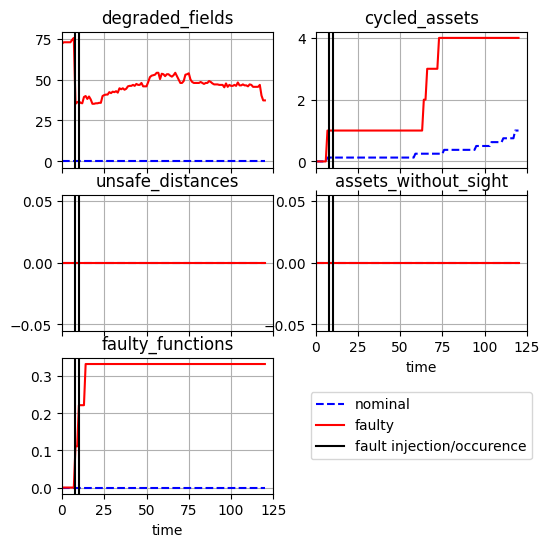
fig.savefig("fault_history_atc_comms.eps", format="eps", bbox_inches = 'tight', pad_inches = 0)
The PostScript backend does not support transparency; partially transparent artists will be rendered opaque.
final_values = ind_hist.scenario.get_slice(-1)
final_values
incorrect_fields: 0
assets_without_sight: 0
unsafe_distances: 0
overbooked_locations: 1
incorrect_perception: 0
duplicate_land_commands: 0
cycled_assets: 4
degraded_fields: 37.27810650887574
faulty_functions: 0.3333333333333333
time: 120.0
final_res = pd.DataFrame.from_dict({k: [v] for k, v in final_values.items()}, orient='index')
final_res
| 0 | |
|---|---|
| incorrect_fields | 0.000000 |
| assets_without_sight | 0.000000 |
| unsafe_distances | 0.000000 |
| overbooked_locations | 1.000000 |
| incorrect_perception | 0.000000 |
| duplicate_land_commands | 0.000000 |
| cycled_assets | 4.000000 |
| degraded_fields | 37.278107 |
| faulty_functions | 0.333333 |
| time | 120.000000 |
print(final_res.to_latex())
\begin{tabular}{lr}
\toprule
& 0 \\
\midrule
incorrect_fields & 0.000000 \\
assets_without_sight & 0.000000 \\
unsafe_distances & 0.000000 \\
overbooked_locations & 1.000000 \\
incorrect_perception & 0.000000 \\
duplicate_land_commands & 0.000000 \\
cycled_assets & 4.000000 \\
degraded_fields & 37.278107 \\
faulty_functions & 0.333333 \\
time & 120.000000 \\
\bottomrule
\end{tabular}